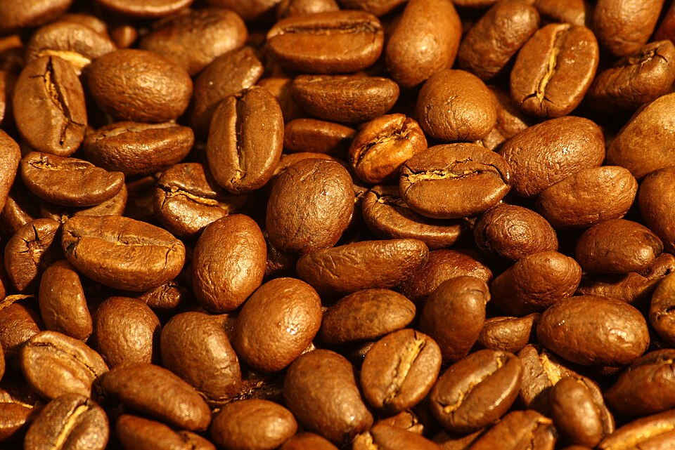
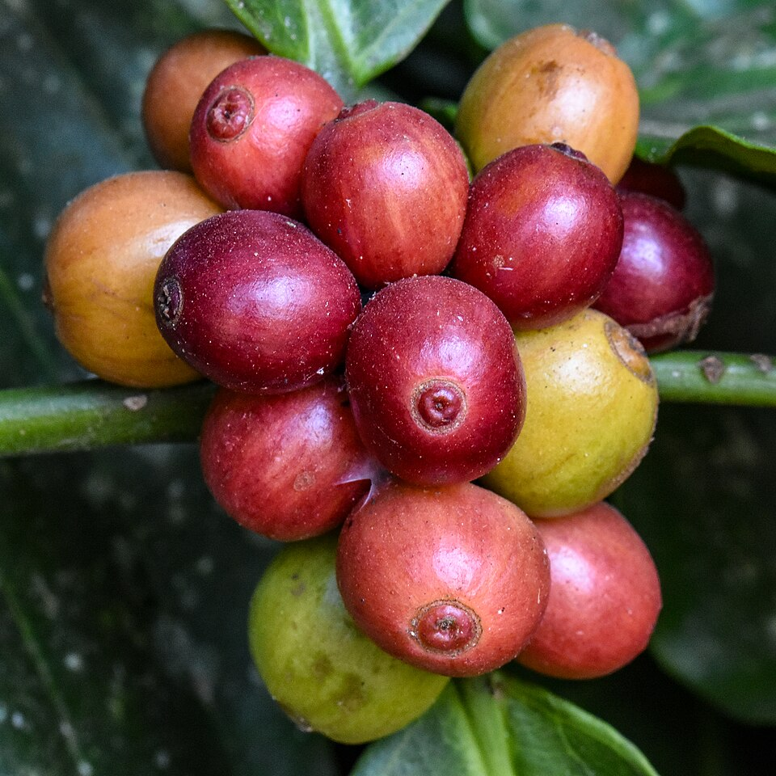
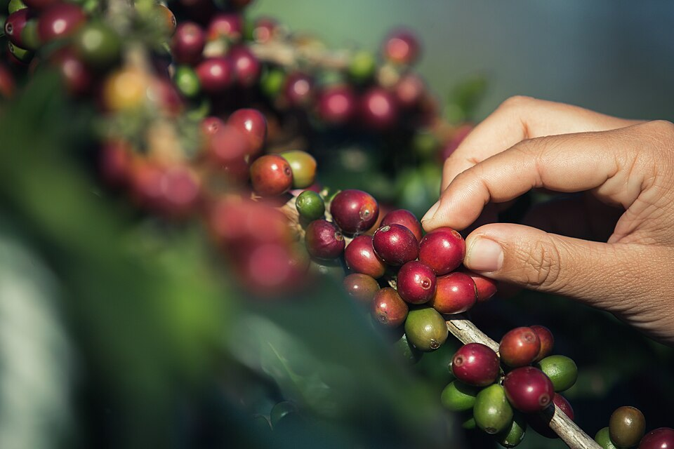

Espresso
Italy- Finely ground coffee
- Hot water, pushed through at high pressure
- A golden layer of crema on top
Which beans the world grows, which drinks people search for, and who drinks the most coffee.
Drag the globe to spin it, and click a continent to see how much coffee it drinks, along with highlights for some of its countries.
Start here
Click anywhere on the globe, or choose a continent below.
In 2023/24 the world drank about 177 million 60 kg bags of coffee. Europe drank the most, followed by Asia & Oceania.
Evidence: [6]
Almost all of the world's coffee comes from two species:

ArabicaAbout 60% of global production. Smoother and more aromatic, used mainly for roast-and-ground coffee.

RobustaCheaper to grow, more bitter and higher in caffeine. Used mainly in instant coffee and espresso blends.
Evidence: [1]
Evidence: [2] (International Coffee Organization data)
In June 2025 the US Department of Agriculture (USDA) forecast a record world harvest of 178.7 million 60 kg bags for 2025/26, more than 10 million tonnes of coffee, led by Brazil (65 million bags) and Vietnam (31 million). In December 2025 it lowered the forecast to 175.3 million bags.

of the world's coffee comes from just two countries: Brazil and Vietnam
of the world's coffee farms are run by smallholders: small family farms
farming families depend on coffee for a living
Evidence: [1]
About this data Official statistics count coffee produced and exported by species, not coffee drunk by species. The figures above are the best available measure of which beans end up in our cups.
A 2024 study by the coffee site Coffeeness compared Google searches for 21 coffee drinks in different countries. The results:
countries searched most for cappuccino
countries searched most for espresso
countries' top iced drink was the frappé
After cappuccino and espresso came black coffee, americano and mocha. Among iced drinks, frappé was followed by iced latte, Frappuccino, cold brew and Spanish latte.
| Country | Most-searched drink |
|---|---|
| Spain, France, Switzerland | Cappuccino |
| Germany, Greece, Canada, USA | Espresso |
| Brazil, Malaysia | Latte |
| Turkey | Turkish coffee |
| United Kingdom | Macchiato |
Read with care This study measures what people search for online, not what they buy or drink, and some results were questioned (Italy, for example, was missing). We found no reliable worldwide dataset of coffee consumption by drink type.
Almost every drink on a café menu starts with a shot of espresso. What changes is what goes in with it. Hover over a drink to pour it.
In the 2023/24 coffee year the world drank about 177 million 60 kg bags of coffee. Here is how that splits by continent:
Each person below stands for 1% of all the coffee drunk in the world in 2023/24, coloured by continent.
What the people show The icons show each continent's share of the coffee drunk, not the number of coffee drinkers. There is no reliable worldwide count of how many people drink coffee.
How we got these figures The International Coffee Organization (ICO) reports consumption for six regions, not continents. We added its "North America" (USA and Canada) and "Caribbean, Central America & Mexico" regions together to get the North American total. The ICO does not report Asia and Oceania separately, and we found no reliable figure to split them. The Australia figure comes from a different source (USDA data reported by Statista), which counts coffee in a slightly different way, so it is given only for scale.
Measured per person, the Nordic countries lead the world by a wide margin.
Each sack is filled to the kilos of coffee one person drinks in a year. A full sack is Finland's 12 kg.
| # | Country | kg per person per year |
|---|---|---|
| 1 | Finland | 12.0 |
| 2 | Norway | 9.9 |
| 3 | Iceland | 9.0 |
| 4 | Denmark | 8.7 |
| 5 | Netherlands | 8.4 |
| 6 | Sweden | 8.2 |
| 7 | Switzerland | 7.9 |
| 8 | Belgium | 6.8 |
| 9 | Luxembourg | 6.5 |
| 10 | Canada | 6.2 |
About this data These per-person figures come from ICO data for roughly 2017–2021, republished by news and statistics sites. Figures vary between sources: Finland, for example, appears as 9.6 kg in older tables and 12 kg in newer ones.